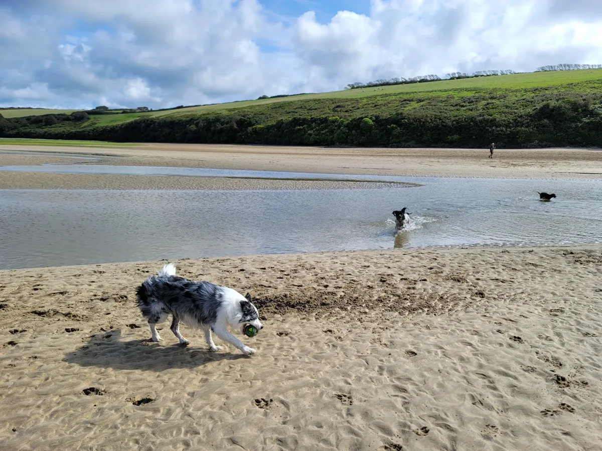

Dog-Friendly Beaches in Newquay: Seasonal Rules & Best Spots

Newquay is blessed with some of the finest beaches in Cornwall, and most of them welcome dogs for at least part of the year. The key thing to know is that seasonal restrictions apply on many beaches between Easter and 30 September, typically banning dogs during the busiest hours of the day. Outside of those times, the beaches are yours to enjoy.
I walk dogs on these beaches every day, so here's the honest rundown — where to go, when to avoid, and which beaches are worth the drive.
Understanding the Seasonal Rules
Most of Newquay's beaches are managed by Cornwall Council, which enforces dog restrictions from Easter to 30 September each year. During this period, dogs are typically banned from designated zones between 10:00 and 18:00. Outside of these hours — early mornings and evenings — dogs are welcome everywhere. From 1 October through to Easter, there are no restrictions at all and dogs can enjoy the full stretch of every beach.
This is one of the reasons we specialise in evening and weekend walks. The beaches are quieter, the light is beautiful, and your dog gets the freedom to run.
Beach-by-Beach Guide
Fistral Beach
Seasonal restriction: Dogs restricted Easter to 30 September, 10:00–18:00 on the main beach.
Fistral is Newquay's most famous beach and arguably the best surfing beach in the UK. During the summer months, dogs are not allowed on the main stretch during the day, but the south end of the beach towards the Headland is dog-friendly year-round. This section of South Fistral is our favourite spot for evening walks — the sand is wide, the waves are dramatic, and on a clear evening the sunset over the headland is spectacular. Outside of the restricted season, the entire beach opens up and you can walk the full length from the Headland to Pentire. Fistral is also one of the best beaches for evening walks in summer, as the restriction lifts at 18:00 and the beach empties out beautifully.
Towan Beach
Seasonal restriction: Dogs restricted Easter to 30 September, 10:00–18:00.
Towan is the town centre beach, sitting right below the harbour and overlooked by the famous Island House on its tidal island. It is a compact, sheltered beach that is easy to access from the town centre. During the summer it gets very busy with tourists and the dog ban covers the main beach area. In the off-season, though, Towan is a lovely spot for a quick walk with your dog. The beach is close to shops and cafes, making it easy to combine a beach walk with a coffee stop in town. The harbour wall provides some shelter from the wind on rougher days.
Great Western Beach
Seasonal restriction: Dogs restricted Easter to 30 September, 10:00–18:00.
Great Western Beach sits just below the railway line and is one of Newquay's more sheltered spots, tucked between the cliffs and well protected from the prevailing south-westerly winds. It is a beautiful beach with golden sand and interesting rock pools at low tide. Like Towan, it gets the standard seasonal restriction, but outside of those hours it is a peaceful and scenic place to walk your dog. Access is via steps from the cliff path or through the Great Western Hotel grounds. The beach connects to Towan at low tide, giving you a longer walk if the conditions are right.
Lusty Glaze
Seasonal restriction: Dogs not allowed during peak season. Check their website for current dates.
Lusty Glaze is a privately managed beach that operates slightly differently to the council-run beaches. During the summer season, dogs are generally not permitted at all. Outside of peak times, dogs may be welcome, but it is worth checking their website or calling ahead before visiting. The beach itself is stunning — a sheltered cove accessed by a steep staircase — and it hosts events and has its own restaurant. For reliable dog-friendly beach access, the neighbouring Great Western or Porth beaches are better choices.
Porth Beach
Seasonal restriction: Dogs welcome year-round on the northern end of the beach.
Porth is one of the best beaches in Newquay for dog owners, precisely because part of it is dog-friendly all year round. The northern end of the beach, towards the island and the river, has no seasonal restrictions. The beach is wide and flat, with shallow water that is great for dogs who like a paddle. It is also a popular family beach, so your dog should be well-behaved around children. At low tide, you can explore the small island in the middle of the beach and walk up along the river estuary. There is a car park right by the beach, making access easy. Porth is our top recommendation for summer beach visits with dogs.
Crantock Beach
Seasonal restriction: Dogs welcome but must be on lead near livestock on the dunes.
Crantock is a National Trust beach just south of Newquay, across the Gannel estuary. It is a wide, expansive beach backed by sand dunes, and dogs are welcome throughout the year. The main thing to be aware of is that the dunes and surrounding grassland often have grazing cattle, so dogs must be kept on a lead in those areas. On the beach itself, dogs can run freely. Crantock is one of the most beautiful beaches in the area and tends to be quieter than Fistral or Watergate Bay, even in summer. The walk from the National Trust car park through the dunes to the beach is lovely in itself. At low tide, the beach is enormous and you can walk for miles.
Watergate Bay
Seasonal restriction: Dogs restricted Easter to 30 September on part of the beach, 10:00–18:00. The north end is dog-friendly year-round.
Watergate Bay is a two-mile stretch of dramatic coastline about three miles north of Newquay. During the summer months, dogs are restricted from the main section near the Watergate Bay Hotel and the Extreme Academy, but the northern end of the beach remains dog-friendly year-round. It is a spectacular beach with towering cliffs, caves to explore at low tide, and powerful surf. The sheer size of Watergate Bay means that even in summer, the dog-friendly section gives you plenty of space. In the off-season, the entire beach is available and a full-length walk from south to north is one of the best dog walks in Cornwall.
Holywell Bay
Seasonal restriction: Dogs welcome year-round on most of the beach.
Holywell Bay is a large, wild beach about four miles south-west of Newquay. Dogs are welcome year-round on the majority of the beach, making it an excellent choice at any time of year. The beach is backed by impressive sand dunes that are fun to explore, and at low tide you can find the famous Holywell holy well in the caves at the south end. The beach has a slightly more remote feel than Newquay's town beaches, and it attracts fewer crowds. There is a National Trust car park, and the walk down to the beach takes about ten minutes. Holywell Bay also featured as a filming location for the Poldark television series, if you fancy a scenic selfie with your dog.
Our Top Tips for Beach Walks With Dogs
- Check the tides. Some beaches, like Great Western and Towan, lose a lot of sand at high tide. Plan your visit around low or mid-tide for the best experience.
- Bring fresh water. Sea water is not good for dogs to drink. Always carry fresh water and a bowl, especially on warm days.
- Rinse off after. Sand and salt water can irritate your dog's skin. A quick rinse when you get home helps prevent itching.
- Watch for hazards. Jellyfish wash up on Newquay beaches, particularly in late summer. Weever fish bury themselves in the sand at the waterline. Keep an eye on your dog and steer them away from anything suspicious.
- Pick up after your dog. Always bag it and bin it. Beach bins are available at most access points. Leaving dog mess on beaches gives all dog owners a bad name.
Want Us to Walk Your Dog on These Beaches?
I walk dogs on all of these beaches regularly — it's literally my job. If you're a local who works long hours or a visitor who wants your dog to have a proper beach adventure, my dog walking service covers all of these spots. I know the tides, the quiet times, and the best routes.
We cover Newquay and the surrounding area — see our full areas we cover page for details.
Professional Dog Walking Across Newquay's Best Beaches
Evening walks, weekend adventures and holiday cover. We know every beach, every tide and every shortcut.
View Dog Walking Services